AS5523: Stellar Orbits and Numerical Integration
1 The Orbit Integrator Scheme
The first part of the project was to create a program that is able to integrate the orbit of a star in three parts:
- Driver (orbit driver)
- Integrator(s) (to advance the star to the next state)
- Acceleration (to calculate the acceleration from the state)
1.1 Acceleration due to a Potential
The first part that I tackled was to create a function to calculate The force experienced by a star orbiting a point mass. The acceleration due to this point mass is given by:
\[\begin{equation} \vec{a} = \frac{d\vec{v}}{dt} = \frac{\vec{F}}{m} = - \frac{M_{\mathrm{ptmass}}}{r^3} \vec{r} \label{eq:eq-ptmass} \end{equation}\]
Given this we can write a function for this acceleration
function f(t, state)
pos, vel = state
acc = - G * M * pos / norm(pos)^3
return [vel, acc]
endThis function makes use of the dynamic form of Ordinary Differential Equations as discussed in Landau, Páez, and Bordeianu (2024) chapter 8.
\[\begin{equation} \frac{d \mathbf{S}(t)}{dt} = \mathbf{F}(t, \mathbf{S}) \label{eq:eq-ode} \end{equation}\]
Where the state of the system, and the force applied to it, are defined as:
\[\begin{equation} \mathbf{S} = \begin{bmatrix} S^{(0)}(t) \\ S^{(1)}(t) \\ \ddots \\ S^{(N-1)}(t) \\ \end{bmatrix}, \qquad \mathbf{F} = \begin{bmatrix} F^{(0)}(t, \mathbf{S}) \\ F^{(1)}(t, \mathbf{S}) \\ \ddots \\ F^{(N-1)}(t, \mathbf{S}) \\ \end{bmatrix}. \label{eq:eq-ode-def} \end{equation}\]
That is to say that the state of the system is defined by an \(N\)-dimensional vector and the force that acts on the system is also an \(N\)-dimensional vector. I had some difficulty combining this with the vector version of the force equations that I prefer to use. Using the vector versions allows us to not have to track \(x, y, z, v_x, v_y, v_z\), etc. individually. Rather the vectors can be placed into the equations directly and the forces are returned as vectors as well. I made it work with the following setup for the state and force vectors:
\[\begin{equation} \mathbf{S} = \begin{bmatrix} x & y & z \\ v_x & v_y & v_z \\ \end{bmatrix}, \qquad \mathbf{F} = \begin{bmatrix} v_x & v_y & v_z \\ a_x & a_y & a_z \\ \end{bmatrix}. \label{eq:ode-my-def} \end{equation}\]
The state of the system is held in \(\mathbf{S}\). \(\mathbf{S}[0]\) (to use some python notation) is the position of the star and \(\mathbf{S}[1]\) is the velocity of the star. Therefore the force function \(\mathbf{F}\) will take in the state of the system, the current velocity becomes the force that is added to the position, the acceleration is calculated from the position/any other state variables, and then will be “added” to the velocity.
1.2 Integrator(s)
I implemented many integrators for this project. The first was the Eulerian integrator described in the instructions.
function euler(t, y, force, dt)
fR = force(t, y)
y_new = y + fR * dt
return y_new
endI had to be careful when I eventually started to implement the symplectic integrators which update the position based on “future” velocities. For example the simplest symplectic integrator I implemented was an Eulerian symplectic integrator
\[\begin{align} \vec{v}_{n+1} &= \vec{v}_{n} + \Delta t \times \frac{d \vec{v}}{dt}, \\ \vec{x}_{n+1} &= \vec{x}_{n} + \Delta t \times \vec{v}_{n+1}. \label{eq:symplectic} \end{align}\]
This introduces new challenges of keeping track of old positions and velocities to calculate intermediate accelerations.
As well, for all the integrators I implemented I ensured that they used a common function call so that they could be easily swapped. Each integrator had as an input:
- The time, \(t\) of the simulation step
- The current state of the system \(\mathbf{S}\)
- the force function that determines the force experienced by the system \(\mathbf{F}\)
- the time step, \(\Delta t\), of the integration.
This ensured consistency between the functions and made testing them simple to change which function I was using.
I implemented the following integrators:
- Eulerian Integrator
- Symplectic Eulerian integrator
- 2nd order Eulerian Integrator as described in the instructions
- Leapfrog Integrator
- Velocity-Verlet Integrator
- 2nd Order Runge-Kutta
- 4th Order Runge-Kutta
- The provided 4th Order Runge-Kutta
- 4th Order Yoshida Integrator
See the source code for my implementation of the integrators.
1.3 Orbit Simulation/Driver
The last step of the code was to setup a function that took the star and integrated its orbit over time using a chosen integrator and force function. In both Python and Julia I implemented star objects to hold the state, trajectory, energy, and angular momentum history of the star throughout its orbit. As well, I created two orbit functions, one for an orbit with a fixed timestep, and one for an orbit with an adaptive timestep. For the adaptive timestep orbit I used \[\begin{equation} dt \ll \sqrt{\frac{r}{a}} \label{eq:timestep} \end{equation}\] as the criteria for setting the timestep, as long as this was below some initial maximum timestep. I set a value of \(\eta \ll 1\) and set the timestep with:
dt = eta * sqrt(norm(pos)/norm(acc))2 Orbits Around a Point Mass
Once the three parts of the code were working I tested it by simulating a circular stellar orbit around a point mass.
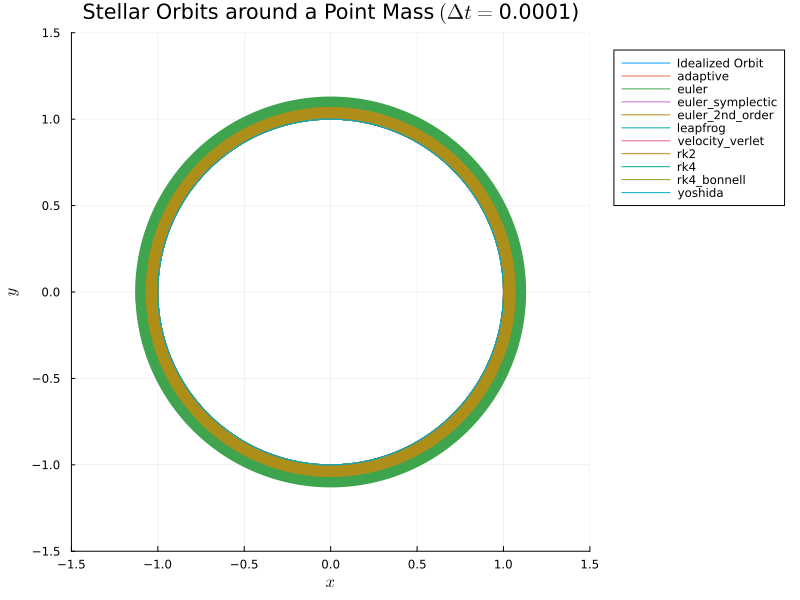
Figure 1 shows a plot of 100 orbits around a point mass for all integrators using a timestep of \(\Delta t = 0.0001\).
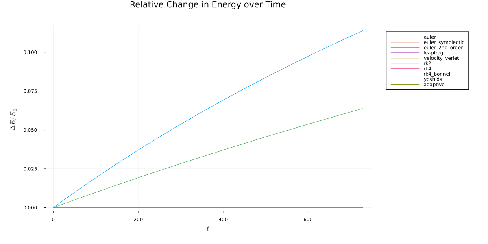
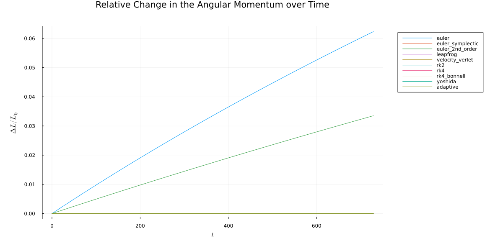
As can be seen in figures Figure 2 (a) and Figure 2 (b) the Eulerian and 2nd order Eulerian integrators add energy over time. They do this to a much higher degree than the rest of the integrators.
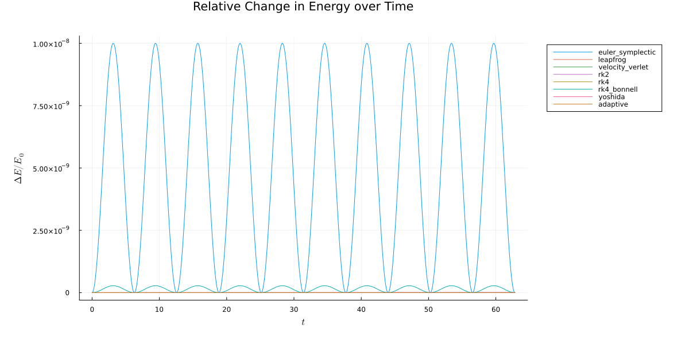
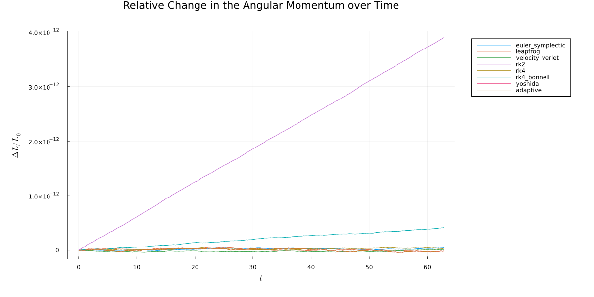
Figure 3 (a) shows how the symplectic Eulerian integrator keeps the energy of the system bounded but does not explicitly conserve energy. Figure 3 (b) shows the RK2 and the provided RK4 integrators adding angular momentum over time as well, while the rest of the integrators keep the angular momentum approximately constant throughout the orbits. Figure 4 shows the behavior of the energy for various subsets of the integrators. One interesting thing to note is that the standard RK4 implementation loses energy over time while RK2 adds energy. I was not aware of this difference between the orders of the Runge-Kutta methods.
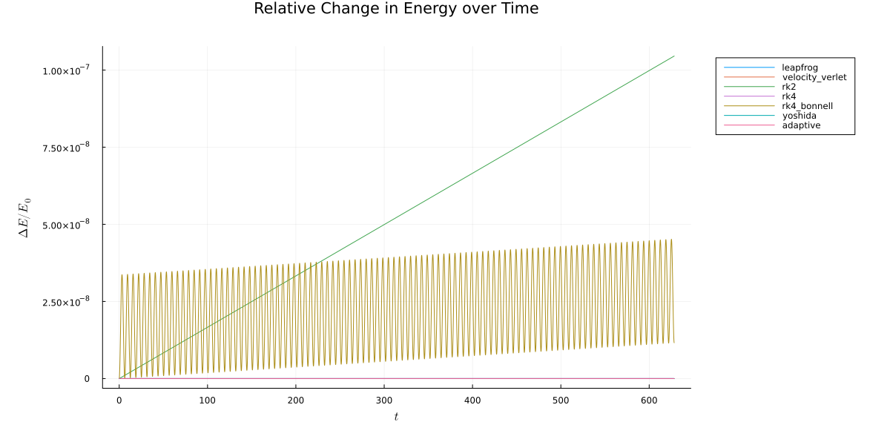
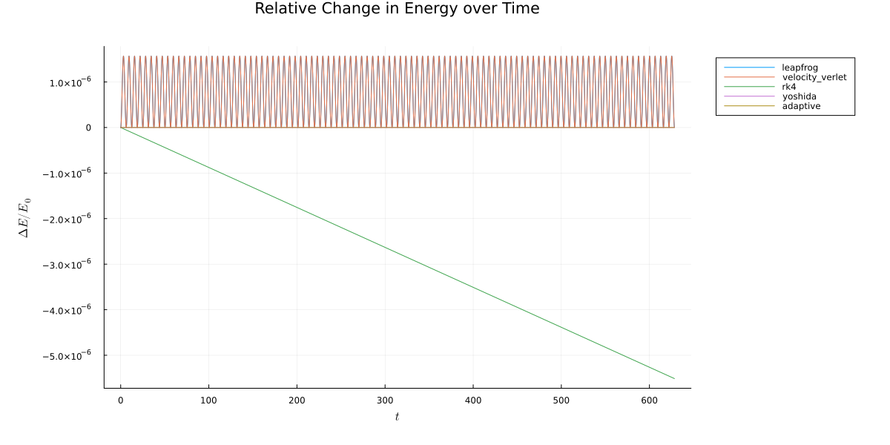
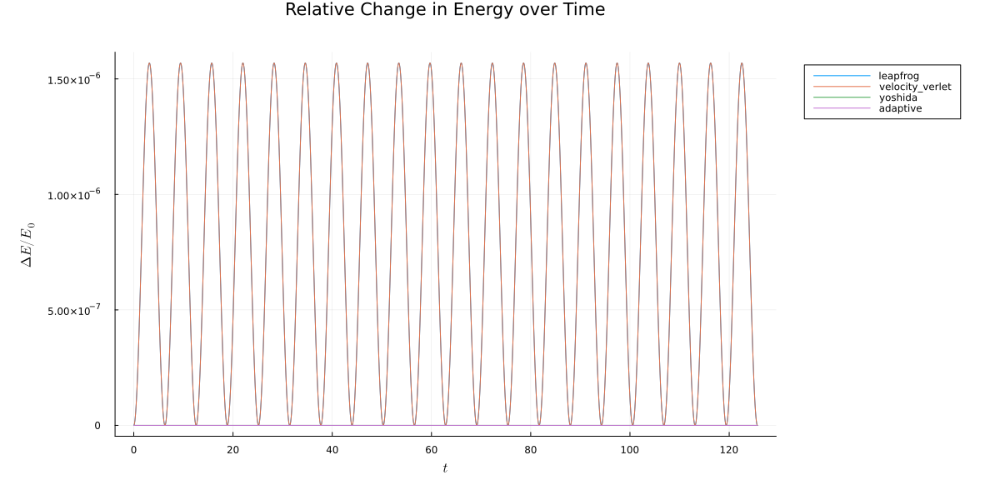
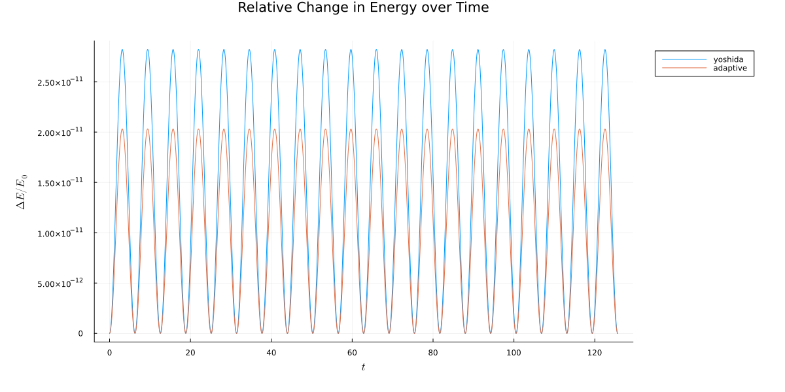
An interesting point from the tests of the integrators around the point mass potential, was the different biases of the integrators. These biases were only apparent for large timesteps. Figure 5 shows examples of orbits for all the integrators with large timesteps. It is clear to see the integrators that add energy over time as the star slowly drifts outward from the point mass. The symplectic integrators (Symplectic Euler, Leapfrog/Velocity-Verlet, and Yoshida) all show the bounded behavior of the energy, with the star oscillating between inner and outer regions.
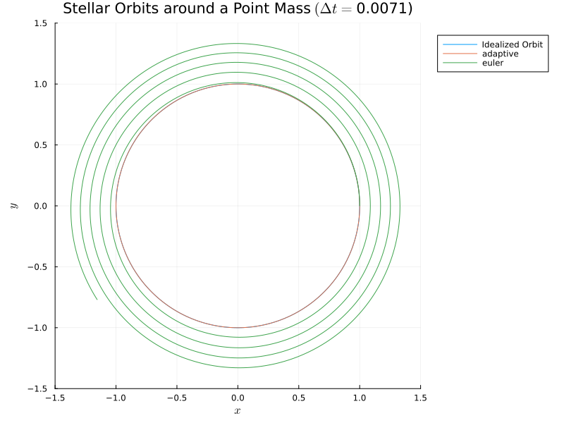
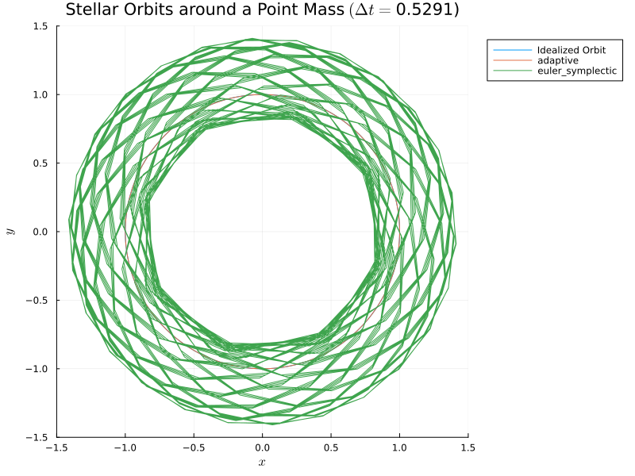
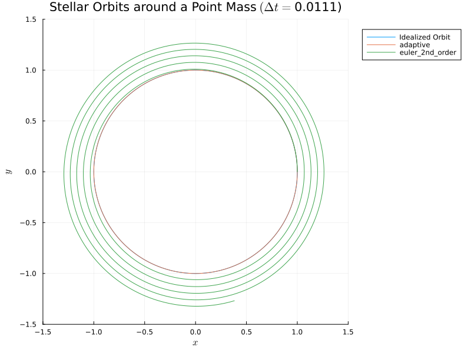
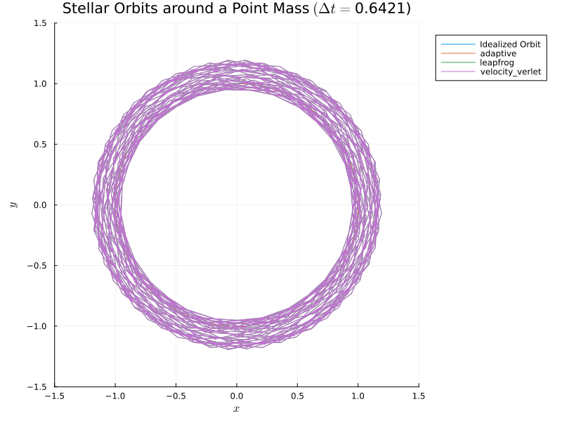
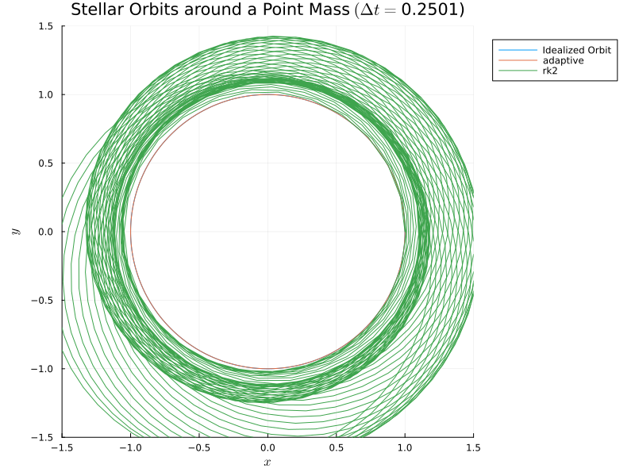
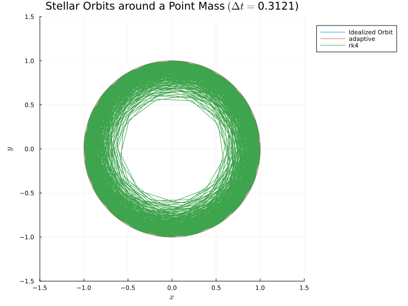
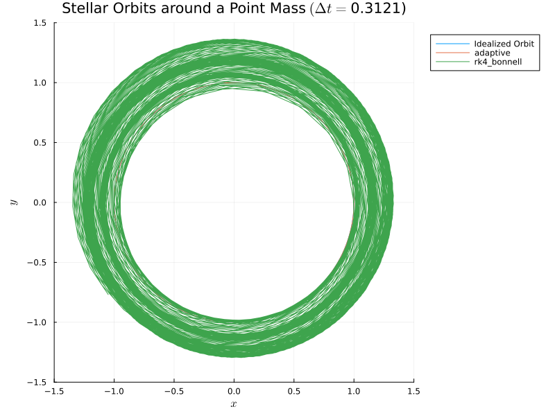
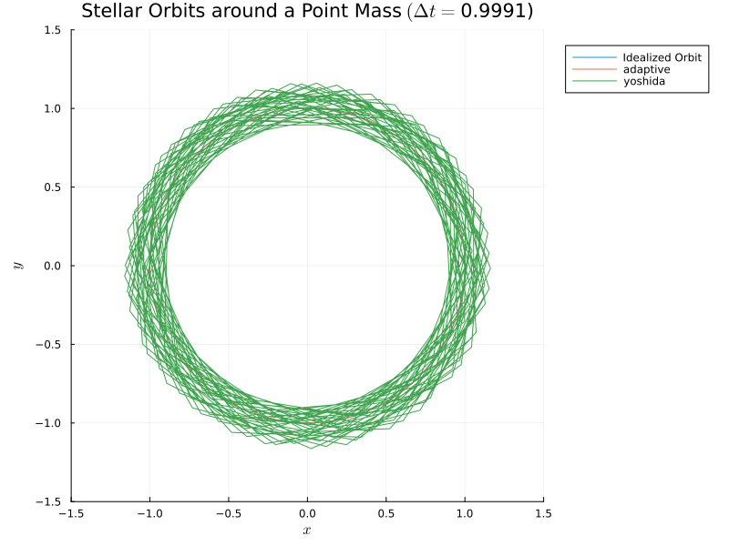
2.1 Numerical Accuracy
Calculate how the error in the integration depends on the timestep used.
Energy and Angular momentum should be conserved throughout the orbits. So I used those to test the accuracy of the various integrators. However three of the integrators ran into floating point errors in the change in energy see Figure 6 (a). These floating point error regions, and some asymptotic regions, were removed. The remaining data points were then used to fit the integrator’s error dependence on the timestep see Figure 6 (b).
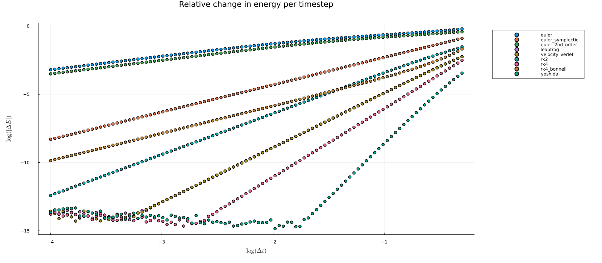
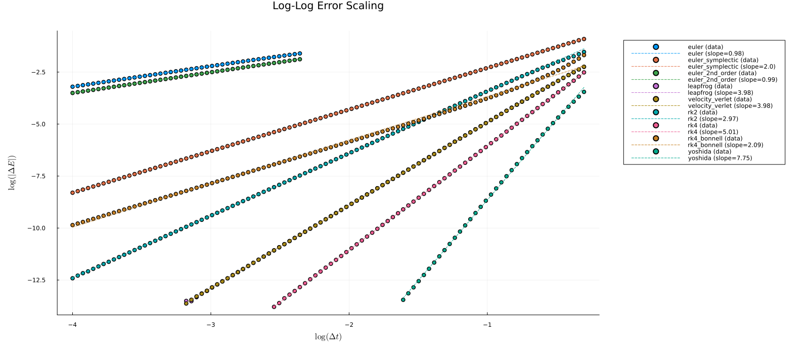
Table 1 shows the final fitted values for each of the integrators. However because I used multiple symplectic integrators, which keep the energy bounded, this is not the best method to determine the true dependence of the error on the timestep. But it is useful to show the relative error dependence between the integrators.
| Integrator | Fitted Error Dependence on \(\Delta t\) |
|---|---|
| Euler | 0.98 |
| Symplectic Euler | 2.00 |
| 2nd Order Euler | 0.99 |
| Leapfrog | 3.98 |
| Velocity-Verlet | 3.98 |
| RK2 | 2.97 |
| RK4 | 5.01 |
| Provided RK4 | 2.09 |
| Yoshida | 7.75 |
2.2 Timestep to “Break” One Orbit
Evaluate at what timestep the integration breaks completely on one orbit.
My interpretation of this instruction was to check the difference between the initial and final positions after one orbit. I set a tolerance value that if after one orbit the difference was greater than the tolerance I considered the orbit to be “broken”. For each of the integrators I tested one orbit for a range of timesteps. However this test did not reveal any particularly useful insights. I set the tolerance to be very high with tol=1e-4 and even with this high of a tolerance all integrators “broke” with a timestep barely above \(\Delta t = 10^{-4}\). The only integrators that had a different breaking timestep were the basic euler integrator and the 2nd order euler integrator. Table 2 shows the results of this analysis.
| Integrator | \(\Delta t\) to Break One Orbit |
|---|---|
| Euler | 0.001 |
| Symplectic Euler | 0.000153751 |
| 2nd Order Euler | 0.001 |
| Leapfrog | 0.000153751 |
| Velocity-Verlet | 0.000153751 |
| RK2 | 0.000153751 |
| RK4 | 0.000153751 |
| Provided RK4 | 0.000153751 |
| Yoshida | 0.000153751 |
3 Orbits in Galactic Potentials
Integrate a number of orbits with different initial conditions \((\vec{r}, \vec{v})\). Determine if each orbit is a loop orbit or a box orbit.
We now simulate stellar orbits within a logarithmic galactic potential
\[\begin{equation} \Phi_L = v_{0}^{2} \ln \left( R_{c}^{2} + x^{2} + \frac{y^{2}}{q_{1}^{2}} + \frac{z^{2}}{q_{2}^{2}} \right). \label{eq:eq-potential} \end{equation}\]
3.1 Force Function
First I derived the force experienced by the star from this potential
\[\begin{align} m \frac{d \vec{v}}{dt} &= - \nabla \Phi_L \\ &= - \frac{2 v_{0}^{2}}{R_{c}^{2} + x^{2} + y^{2}/q_{1}^{2} + z^{2}/q_{2}^{2}} \left[ x \hat{x} + \frac{1}{q_{1}^{2}} y \hat{y} + \frac{1}{q_{2}^{2}} z \hat{z} \right] \label{eq:gal-force} \end{align}\]
Once I got this function setup I tested it with the values of the potential set to \(q_1=1.0\), \(q_2=1.0\), \(R_c=0.2\), and \(v_0=1.0\). I simulated a stellar orbit starting at \(x=R_c\) and \(v_{y}=v_{0}\). This produced the circular orbit in Figure 7 (a). I then tested this galactic setup for a variety of \(x\) and \(v_{y}\) values. Once I confirmed the integration worked with the axisymmetric potential I changed the initial conditions to have \(q_{1}=0.75\), and \(q_{2}=0.85\).
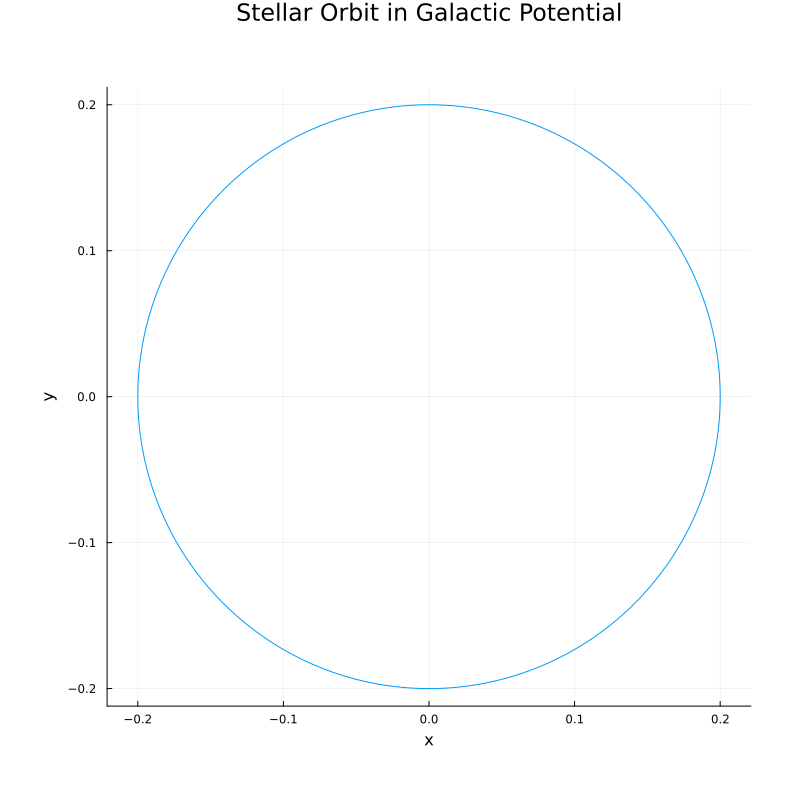
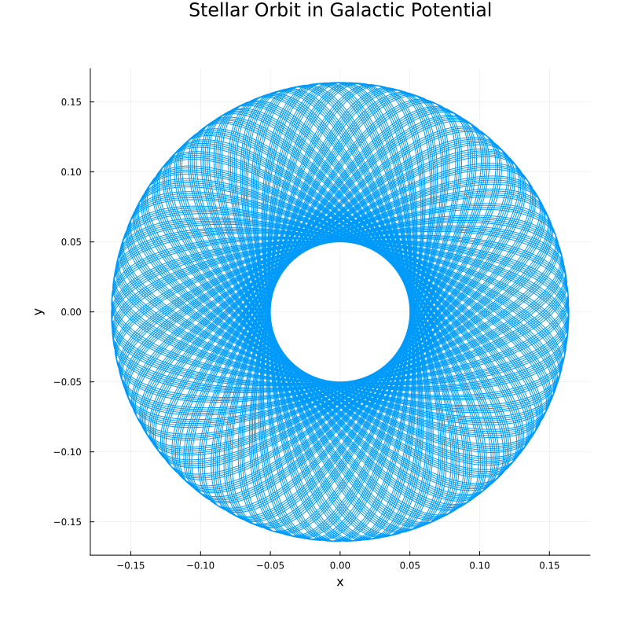
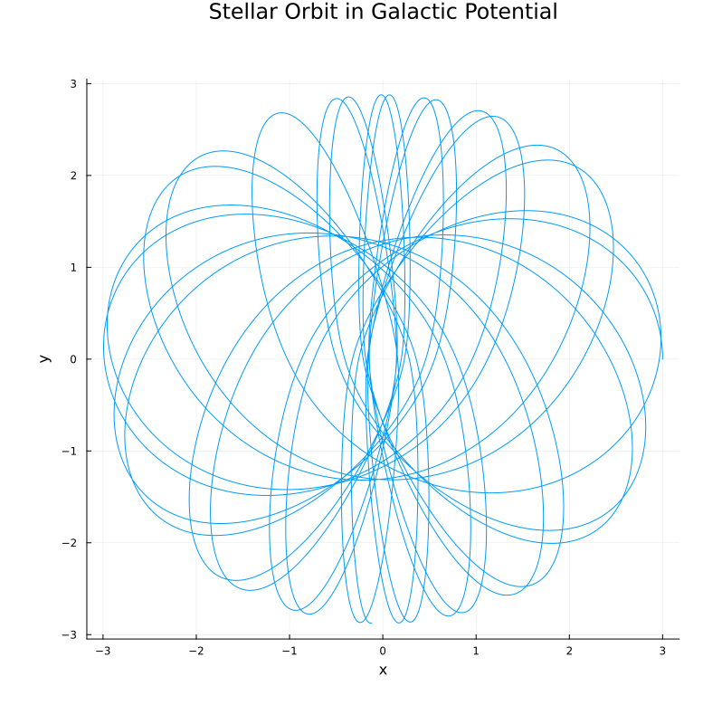
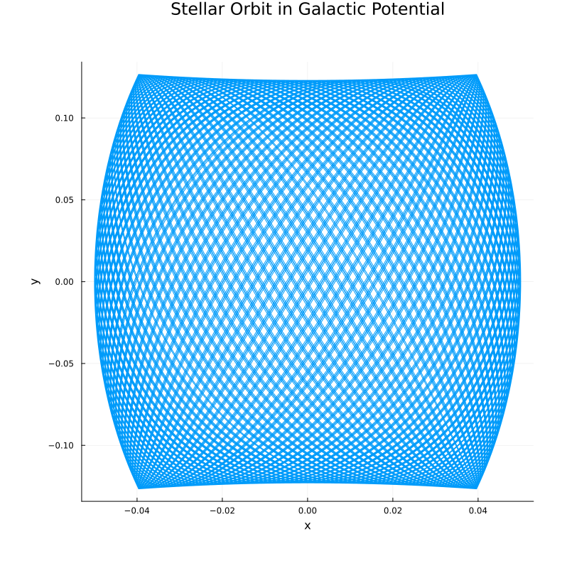
I then setup a more systematic “survey” of the various initial conditions for the stars. I sampled six values of starting \(x\) and \(v_{y}\) values to produce the orbit survey in Figure 8. Each orbit was then classified into either a box or loop orbit based on the orbit classfier function discussed in Section 3.2.
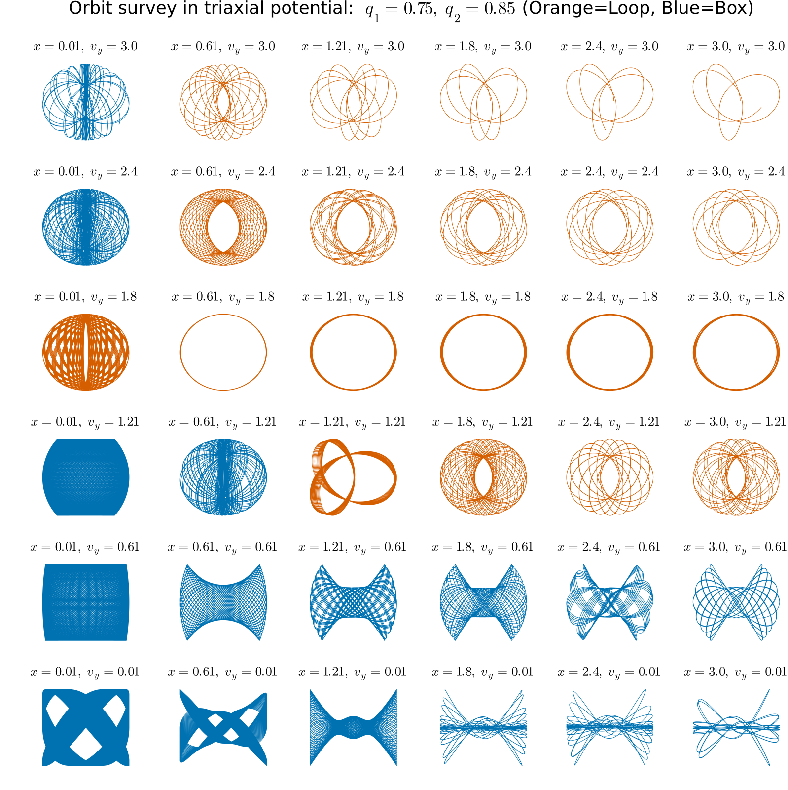
3.2 Orbits in the \((r, v_{\mathrm{rot}})\) Plane
Can you determine roughly in the \((r, v_{\mathrm{rot}})\) plane where loop and box orbits are located? (\(v_{\mathrm{rot}}\) is the rotational velocity \(v_{\mathrm{rot}}=\frac{\vec{v} \times \vec{r}}{r}\))
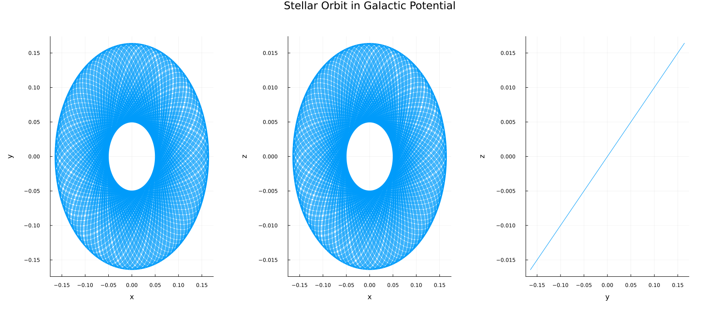
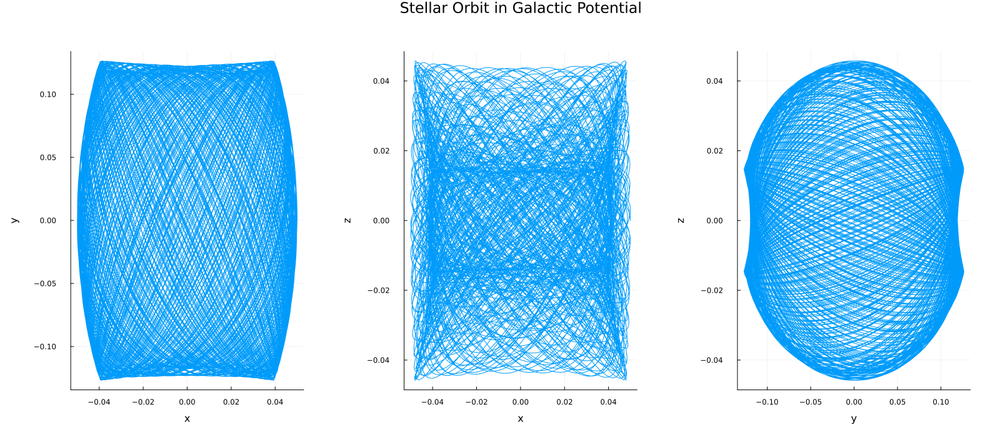
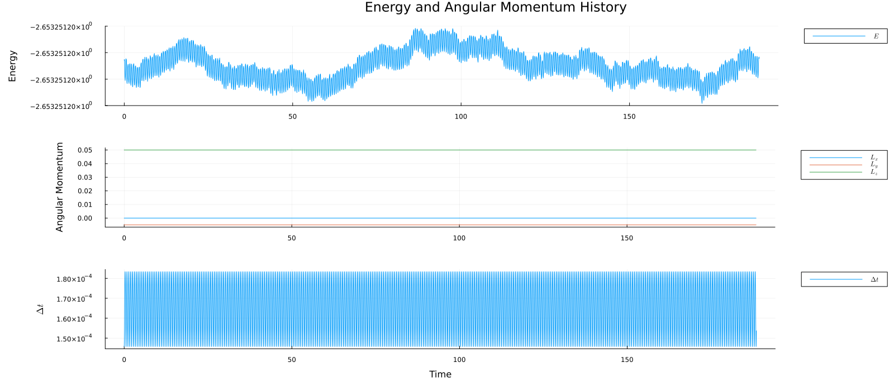
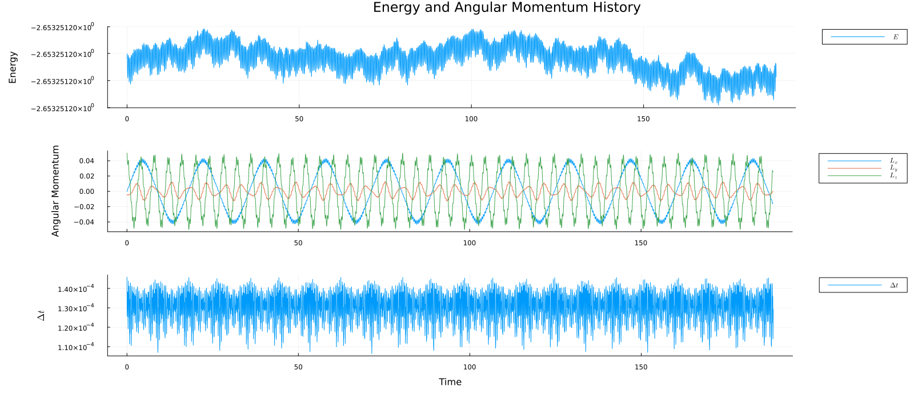
I wrote a function to determine whether each orbit was a box orbit or a loop orbit. There were two possible ways of classifying the orbits. The first was that for a large number of orbits the average angular momentum should be \(0\) for a box orbit (Binney and Tremaine 2008). Whereas a loop orbit, because it keeps a sense of rotation, the average angular momentum should be some non-zero value. However, this would involve integrating a very large number of orbits to ensure the average is approximately \(0\). The other option is that the angular momentum changes sign over time in a box orbit. Thus I created a function that checked that the sign of \(L_{z}\) stays constant throughout the orbit. Figure 9 shows two examples of box and loop orbits. The components of the angular momentum of the loop orbit have the same sign throughout the orbit. The box orbit shows the various components changing sign periodically throughout the simulation. Once I had that function working I simulated \(10,000\) stars and classified them as loop or box orbits. Then I took their initial positions and calculated \((r_{0}, v_{\mathrm{rot},0})\) for each of the orbits and plotted them on a heatmap. Figure 10 shows the results of these orbits.
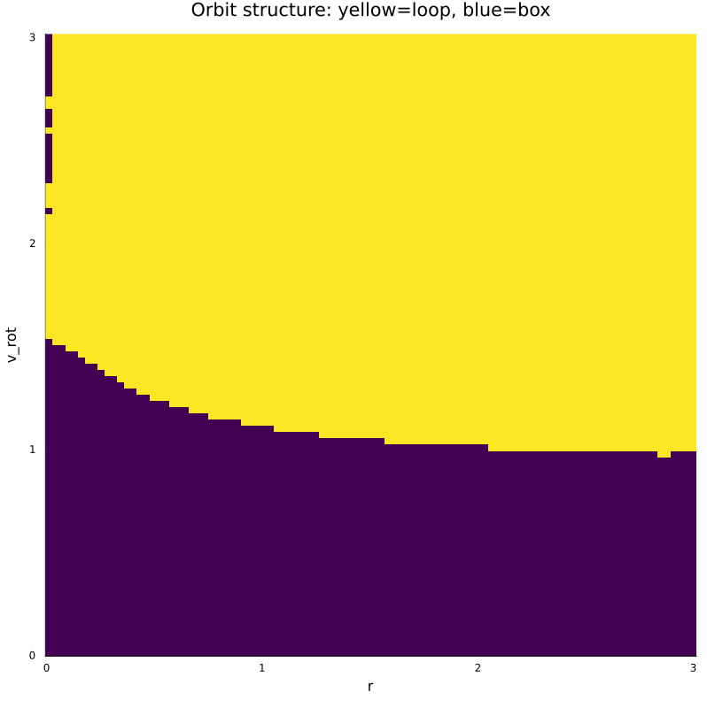